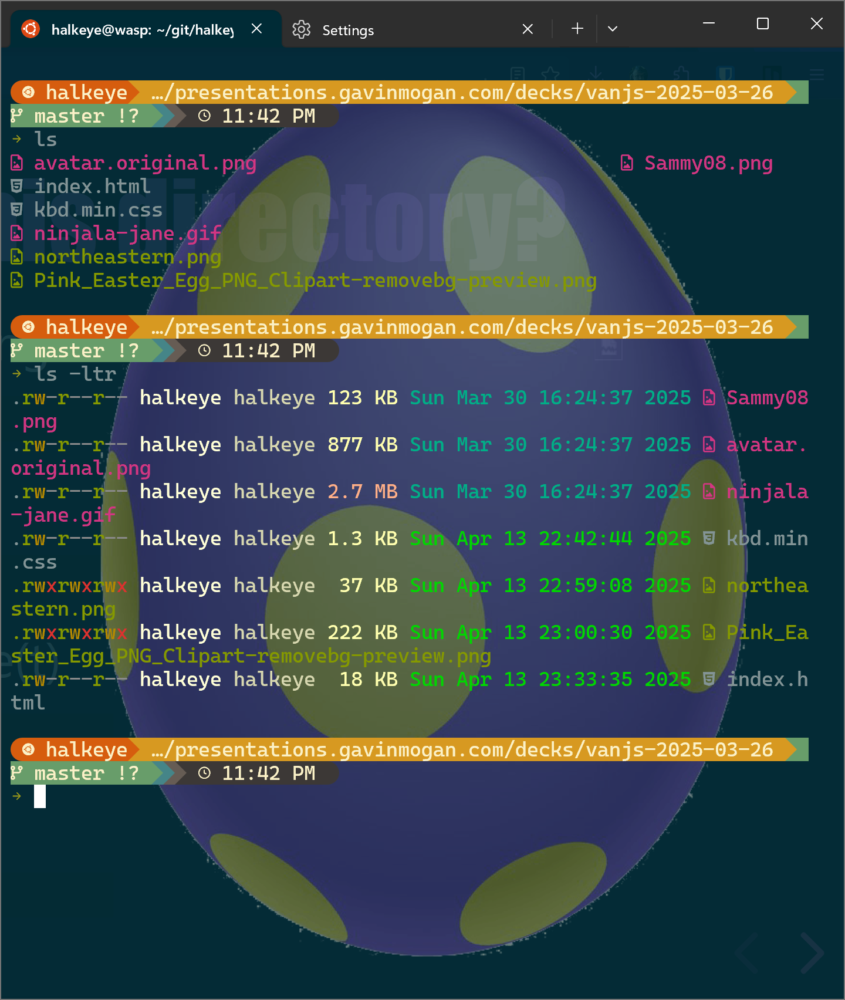

The CLI isn't as scary as you think
VanJS
April 16th, 2025
Gavin Mogan
Senior Software Engineer at Digital Ocean.
Upfront notes
- Talking about linux. Rest are similar
- $ is usually a shell prompt
- Generally, Linux doesn't care what order CLI parameters are in.
- Double Dash for long arguments (find being a notable exception)
- Double Dash by itself also commonly means ends of arguments
Getting Help (Offline non stackoverflow/ai version)
-
Most commands have a man page
$ man find -
Shell functions only have help
$ help for -
Sometimes --help will return things
$ ls --help
Keyboard Shortcuts
- Ctrl+r - Reverse search through your bash history (My fav)
- Up / Down - Prev/next in history
- Ctrl+w - Delete previous word
- Ctrl+k - Delete rest of line
- Ctrl+u - Delete entire line
- Ctrl+a - Move to start of line
- Ctrl+e - Move to end of line
Where am I?
$ pwd
/home/gavinm
$ echo $PWD
/home/gavinm
How to Change Directory
-
Linux uses forward slash - / as folder separator
$ cd /home/gavinm -
Spaces and other characters should be escaped or quoted
$ cd /home/gavinm/Project\ Dir$ cd "/home/gavinm/Project Dir"
Get back there
$ pwd
/home/gavinm
$ cd /home/gavinm/Develop
$ pwd
/home/gavinm/Develop
$ cd -
$ pwd
/home/gavinm
Home Directories
$ cd
/home/gavinm
$ cd ~
/home/gavinm
$ cd $HOME
/home/gavinm
$ cd ~halkeye
/home/halkeye
What is in this directory?
Simple Directory Listing
$ lsLong Listing
$ ls -lDescending(r) by Time(t)
$ ls -ltrHidden files
$ ls -aWhen am I?
$ TZ=America/Vancouver date
Sun Apr 20 12:00:00 PDT 2025
Note: time command times a command, not time of day
$ time sleep 30s
sleep 30s 0.00s user 0.00s system 0% cpu 28.108 total
What's happened recently?
Head will give you the first n lines
$ head -n 2 /var/log/nginx/presentations.gavinmogan.com.access.log
presentations.gavinmogan.com:80 108.172.217.87 - - [24/Jun/2015:07:02:03 +0000] "GET /stats/ HTTP/1.1" 200 5566 "http://odin.kodekoan.com:4080/halkeye/gavinmogan.com/" "Mozilla/5.0 (Windows NT 6.1; WOW64) AppleWebKit/537.36 (KHTML, like Gecko) Chrome/43.0.2357.124 Safari/537.36" "108.172.217.87"
presentations.gavinmogan.com:80 108.172.217.87 - - [24/Jun/2015:07:02:03 +0000] "GET /stats/css/reveal.css HTTP/1.1" 200 48591 "http://presentations.gavinmogan.com/stats/" "Mozilla/5.0 (Windows NT 6.1; WOW64) AppleWebKit/537.36 (KHTML, like Gecko) Chrome/43.0.2357.124 Safari/537.36" "108.172.217.87"
Tail will give you the last n lines
$ tail -n 2 /var/log/nginx/presentations.gavinmogan.com.access.log
presentations.gavinmogan.com:80 162.158.64.218 - - [27/Jun/2015:03:35:46 +0000] "HEAD / HTTP/1.1" 403 166 "-" "Mozilla/5.0 (compatible; CloudFlare-AlwaysOnline/1.0; +http://www.cloudflare.com/always-online)" "162.158.64.218"
presentations.gavinmogan.com:80 162.158.64.218 - - [27/Jun/2015:03:35:46 +0000] "GET / HTTP/1.1" 403 345 "-" "Mozilla/5.0 (compatible; CloudFlare-AlwaysOnline/1.0; +http://www.cloudflare.com/always-online) AppleWebKit/534.34" "162.158.64.218"
Common Options
- -f will keep tailing
- -F will restart tailing if file is truncated
- -n #num# will only print out #num# number of lines
Create Edit Update Destroy
- cat <file> - outputs contents
- tac <file> - outputs contents in reverse directory
- less <file> - outputs content (controlled)
- rm <file> - Remove a file
- rmdir <dir> - Remove an empty directory
- mkdir <dir> - Create a directory (mkdir -p as bonus)
- mkdir -p <dir/subdir/subdir2> - Create all the directories required to make the full path (and doesn't error if already exists)
- touch <file> - update timestamp/create empty file
Whats going on?
- ps xf -A (My Favourite)
- ps aux (Very portable)
- More w's with ps = more wide
- ps auxwww
- pstree
- top
Redirection
Output to file
$ echo "hi" > file.txtErrors to file
$ curl http://fake.server 2> errors.txtInput from file
$ mysql < import.sql Wildcards
$ tail -F ~/Develop/*/logs/development.logWill look find all directories that have a logs directory underneath it.
$ tail -F ~/Develop/*/logs/*.logWill find all log files under all directories that have a log directory (one level deep)
Serious wildcards
Find all directories
$ find -type dFind all files
$ find -type fFind all files ending in log (+
$ find -name '*.log' # find all files ending in .log
$ find -name '*.log' -exec ls {} \; # executes a command for each file
$ find -name '*.log' -exec ls {} + # appends all files to one command
Run something in a directory with logs
$ find /var/log -name '*.log' -execdir pwd \;Power of pipes
With a few combos you can do anything
Some Good Pipes
Filter out text
grepPull out parts of a line
ack / cutReorder items
uniq / sortLoops
forGrep and Awk Can Do anything
grep /favicon.ico access.loglong outputgrep /favicon.ico access.log | awk '{print $17}'AppleWebKit/537.36grep /favicon.ico access.log | awk -F'"' '{print $6}'Mozilla/5.0 (Windows NT 6.1; WOW64) AppleWebKit/537.36 (KHTML, like Gecko) Chrome/40.0.2214.111 Safari/537.36Add sort and uniq pipes
For Loops
for i in $(seq 1 10); do echo $i; donefor i in gavin likes pie; do mkdir $i; donefor i in *; do mv $i $i.bak; doneSearch and Replace
Sed, perl, python, etc
I prefer perl pie
$ echo "Gavin likes Pie" > file.txt$ perl -pi -e 's/Gavin/Bibi/' file.txt$ cat file.txtDebugging
Run a script in debug mode
$ bash -x script.shEnable debugging right now
$ set -xTesting HTTP
Curl and wget work kinda the same, but under different designs.
Wget is great at downloading files.
$ wget http://i.imgur.com/Ia48QDR.jpgCurl is better at retrieving content.
$ curl http://jenkins/job/test-workflow/api/json?pretty=trueSSH
What are ssh keys?
Why would you want them?
How do you use them?
man ssh_configThe End
https://m.do.co/c/7d6859326b6a

Extra Stuffsssss
FIT TEXT
CAN BE USED FOR MULTIPLE HEADLINES
How to get there? - Mac
- Terminal.app
- Iterm2